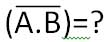
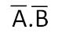
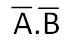
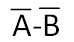
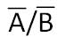
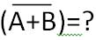
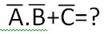
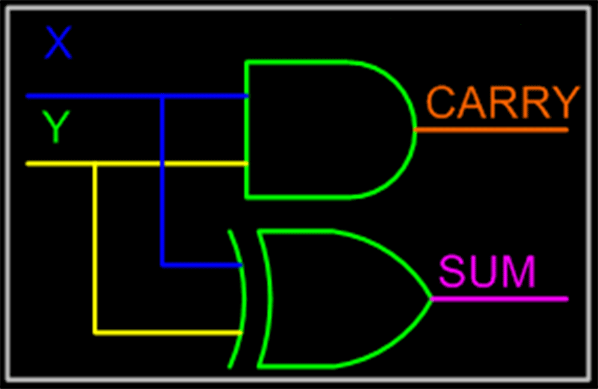

1. বাইনারি ডিজিটকে সংক্ষেপে বলে-
বাইট
বিট
কিলোবাইট
বাডিজিট
2. বর্তমান গণিতের জন্ম হয়েছে-
অংক থেকে
গণনা থেকে
গণিত থেকে
সংখ্যা থেকে
3. প্রাচীন ব্যাবিলনের মানুষের বড় সংখ্যা প্রকাশের জন্য কত ভিত্তিক সংখ্যা ব্যবহার করতেন?
০২ ভিত্তিক
০৪ ভিত্তিক
৩০ ভিত্তিক
৬০ ভিত্তিক
4. শুণ্য এর ব্যবহার ছিল না কোন সংখ্যা পদ্ধতিতে?
রোমান ও ইউরোপিয়ান সংখ্যা পদ্ধতিতে
ভারতীয় ও আরবীয়দের সংখ্যা পদ্ধতিতে
ভারতীয় ও উপমহাদেশে
আরবীয়দের সংখ্যা পদ্ধতিতে
5. সর্বপ্রথম ইনফিনিটি বা অসীম (∞ ) এর আবিস্কার কে প্রচলন করেন?
পিথাগোরাস
নিউটন
এরিস্টটল
গ্যালিলিও
6. ভগ্নাংশ সংখ্যা সর্বপ্রথম প্রবর্তন হয় কোথায়?
গ্রিকে
ইরাকে
ভারতে
মিসরে
7. কোন সংখ্যা পদ্ধতি শুধু মানের উপর নির্ভর করে না এবং তা অবস্থানের উপর নির্ভর করে?
অক্টাল সংখ্যা পদ্ধতি
বাইনারি সংখ্যা পদ্ধতি
পজিশনাল সংখ্যা পদ্ধতি
নন-পজিশনাল সংখ্যা পদ্ধতি
8. প্রায় ৫০০ খ্রিস্টাব্দের দিকে এ্যারাবয়ানরা ভারতীয়দের কাছ থেকে কোন পদ্ধতি আয়ত্ত করেন?
বাইনারি সংখ্যা পদ্ধতি
অক্টাল সংখ্যা পদ্ধতি
পজিশনাল সংখ্যা পদ্ধতি
নন-পজিশনাল সংখ্যা পদ্ধতি
9. আরবরা গণনা পদ্ধতিতে আয়ত্ব করেছিলেন কাদের কাছ থেকে?
চীনদের কাছ থেকে
গ্রিকদের কাছ থেকে
ভারতীয়দের কাছ থেকে
মিসরীয়দের কাছ থেকে
10. মানুষ কম্পিউটারে কোন সংখ্যা পদ্ধতি ব্যবহারে ইনপুট প্রদান করে?
দশমিক সংখ্যা পদ্ধতি
বাইনারি সংখ্যা পদ্ধতি
অকটাল সংখ্যা পদ্ধতি
হেক্সাডেসিমেল
11. কম্পিউটার যে সংখ্যা ব্যবহার করে কাজ সম্পূর্ণ করে সে সংখ্যা পদ্ধতি কোনটি-
দশমিক সংখ্যা পদ্ধতি
বাইনারি সংখ্যা পদ্ধতি
অকটাল সংখ্যা পদ্ধতি
হেক্সাডেসিমেল
12. দশমিক সংখ্যা পদ্ধতির বেজ কত?
02 বেজ
08 বেজ
10 বেজ
16 বেজ
13. দশমিক সংখ্যা পদ্ধতির অংক কতটি?
16 টি
02 টি
08 টি
10 টি
14. প্রাচীন মিসরীয় শিলালিপিতে “⌒” চিহ্ন দ্বারা নিচের কোন দশমিক সংখ্যা প্রকাশ করা হয়।
১
১০
১০০
১০০০০
15. মৌলিক চিহ্ন ব্যবহৃত হয় দশমিক সংখ্যা পদ্ধতিতে-
০৮টি
১০টি
০২টি
১৬ট
16. ডেসিমেল ১৬ দ্বারা বাইনরি সংখ্যা পদ্ধতির মান কত?
1010
1110
10000
1111
17. বর্তমান সময়ে আলোচিত IPV6 পদ্ধতিটি নিচের কোন সংখ্যা পদ্ধতির উপর ভিত্তি করে তৈরি?
দশমিক সংখ্যা পদ্ধতি
বাইনারি সংখ্যা পদ্ধতি
অকটাল সংখ্যা পদ্ধতি
হেক্সাডেসিমেল
18. (AB)16 হেক্সাডেসিমেল সংখ্যার বাইনারি সমতুল্য মান-
(১০১১১০১০)২
(১০১০১০১১) ২
(১০০১০১১০) ২
(১০১১০০০১) ২
19. (১০১০১.১০১)২ সংখ্যাটির অক্টাল মান-
(২৫.৫)৮
(২৪.৫)৮
(৫২)৮
(২৫.৬)৮
20. (০.২৬) ৮ বাইনারি মান-
(০.১০০১১)২
(০.১০০০১১)২
(০.০১০১১০)২
(০.০১০১০১১০)২
21. (১.২৫)১০ বাইনারিতে রুপান্তর করলে কত হবে?
(০.০২৫)২
(১.০১)২
(২.০৫)২
(১০.১)২
22. কম্পিউটার গণিতে কয়টি সংখ্যা পদ্ধতি ব্যবহৃত হয়?
3টি
3টি
4টি
5টি
23. উপস্থাপন প্রকাশের পদ্ধতির উপর ভিত্তি করে সংখ্যা পদ্ধতিকে কয়ভাগে ভাগ করা হয়?
2 ভাগে
3 ভাগে
4 ভাগে
6 ভাগে
24. (২৮)১০ সংখ্যার অকটাল মান কত?
(৩৪)৮
( ৭৭)৮
(২২)৮
(৬৬)৮
25. বাইনারি ১১১১ এর দশমিক মান কোনটি?
১৪
১৫
১৬
১৭
26. অকটাল সংখ্যা পদ্ধতি ভিত্তি কত?
০২ভিত্তি
১০ভিত্তি
০৮ভিত্তি
১৬ভিত্তি
27. কোন বাইনারি সংখ্যা দশমিক সমতূল্য ৩৬৮?
১০১১১০০০০
১১০১১০০০০
১১১০১০০০০
১১১১০০০০০
28. (৭৩৪)৮ হেক্সাডেসিমেল সমতুল্য মান-
১. CID
২. DC1
৩. CCD
৪.1DC
29. দশমিক 84 কে অকটাল সংখ্যায় পরিনত করলে কত হবে?
১২৪
১২৫
১২৭
১২৮
30. বাইনারি সংখ্যা ১০১১১ এর পূরক কত?
১১১১১
০০১১১
০১০০০
১১০০০
31.(১১১০১)২ এর দশমিক মান কত?
১৫
১৮
২৯
৩১
32. ১১০০ ও ১১১ এর বাইনারি যোগ-
১১০০১
১০০১০
১০০১১
১১০১০
33. বাইনারি বিয়োগ কয়টি নিয়ম মেনে চলে-
২টি
৪টি
৩টি
৫টি
34. ১০১১ থেকে ১১০ এর বিয়োগফল বাইনারি নিয়মে-
১১০
১১১
১০১
০১১
35. হেক্সাডেসিমেল সংখ্যা পদ্ধতিতে B ও E এর যোগফল হবে-
ক. (25)16
খ. (F)16
গ. (19)16
ঘ. (BE)16
36. হেক্সাডেসিমেল দুটি ডিজিটের যোগফল ১৬ এর নিচে হলে যে সংখ্যা হবে তাই হবে এবং ক্যারি হবে-
০০
০১
১৬
০৬
37. (১.৭৫)১০=()২
(১১.১)২
(১.১১)২
(১.১০১)২
(১.০১১)২
38. (৬৪)৮ এর বাইনারি মান কত?
১১০১০০
১০১০০১
১১০১১০
১১১০০১
39. চিহ্ন বা সাইনযুক্ত সংখ্যাকে বলে-
চিহ্ন মুক্ত
নম্বর
সাইন্ড নম্বর
বাইনারি নাম্বার
40. চিহ্ন বোঝানোর জন্য সাধারণত ব্যবহার করা হয়-
অতিরিক্ত বাইট
অতিরিক্ত সংখ্যা
অতিরিক্ত নম্বর
অতিরিক্ত বিট
41. বাইনারি সংখ্যাকে কত বিটে প্রকাশ করা হবে তা নির্ভর করে রেজিষ্ট্যারের-
বিটের উপর
শব্দ দৈর্ঘ্যরে উপর
শব্দের উপর
বিটের দৈর্ঘ্যরে উপর
42. 2’s complement এর নির্ণয়ের সূত্র নিম্নরুপ-
ক. 1’s complement+1
খ. 1’s complement-1
গ. 2” + সংখ্যাটি
ঘ. 2” - সংখ্যাটি
43. ২৫০ কে বাইনারিতে প্রকাশ করতে গেলে কত বিট প্রয়োজন?
৪বিট
৩বিট
৯বিট
৫বিট
44. BCD কত বিটের কোড?
1বিট
4বিট
9বিট
8বিট
45. (469)10 এর BCD মান কত?
ক. (010001101001)BCD
খ. (100001001)BCD
গ. (1001101001)BCD
ঘ. (1010101010)BCD
46. EBCDIC কত বিটের কোড?
8 বিট
4 বিট
2 বিট
16 বিট
47. তিন বিট বিশিষ্ট বাইনারি কোডকে কী বলে?
অকটাল কোড
হেক্সাডেসিমেল কোড
বাইনারি কোড
অ্যাসকি কোড
48. চার বিটের বাইনারি কোডকে কী বলে?
অকটাল কোড
হেক্সাডেসিমেল কোড
বাইনারি কোড
অ্যাসকি কোড
49. বাইনারি নেগেটিভ সংখ্যা ও বাইনারি পজেটিভ সংখ্যা বুঝানোর জন্য সংখ্যার কোথায় অতিরিক্ত সাইন বিট ব্যবহার করা হয়?
সর্ববামে
ডানদিকে
যেকোন পার্শে
উভয় পার্শে
50. ঋণাত্মক সংখ্যা কয়টি উপায়ে গঠন করা যায়?
২টি
৩টি
৪টি
৫টি
51. আসকি কোডে মোট সংকেত সংখ্যা কত?
১২৮
২৫৬
৬৪
৫১২
52. জর্জ বুল কত সালে বুলিয়ান অ্যালজেবরা আবিস্কার করেন?
১৮৫৪
১৯৫৪
১৮৩৪
১৯৮৫
53. কত সালে জর্জ বুল গণিত ও যুক্তির মধ্যে সুসম্পর্ক স্থাপন করেন?
১৯২২
১৯৯৫
১৯৮৭
১৮৫৪
54. বুলিয়ান অ্যালজেবরায় প্রত্যেক চলকের কয়টি মান থাকে?
০২টি
০৪টি
০৩টি
০৭টি
55. বুলিয়ান অ্যালজেবরায় প্রত্যেক চলকের মান নিচের কোনটি সঠিক-
০ ও ১
১ ও ১
০ ও ০
০১ ও ১০
56. আধুনিক কম্পিউটার ও ডিজিটাল ইলেক্ট্রনিক্সে কয় ধরণের সংখ্যা পদ্ধতি ব্যবহৃত হয়?
২টি
৩টি
৪টি
৫টি
57. বুলিয়ান ধ্রবক কাকে বলে?
০ -কে
১ -কে
০ ও ১ কে
কোনটিই নয়
58. বুলিয়ান অ্যালজেবরায় কয় ধরণের মৌলিক যুক্তিমূলক অপারেশন হয়?
২ ধরনের
৩ ধরনের
৪ ধরনের
৫ ধরনের
59. 




60. যে সকল টেবিল বা সারণির মাধ্যমে বিভিন্ন গেইটের ফলাফল প্রকাশ করা হয় তাকে বলে-
সত্যক
সত্যক সারণি
টেবিল
সারণি
61. 
62. ২৩ টি ইনপুট দিলে ধাপ হবে-
ক. 02
খ. 04
গ. 08
ঘ. 16
63. A=1, B=0 এবং C=1 হলে 
ক. 01
খ. 10
গ. 00
ঘ. 11
64. A=0, B=1 এবং C=0 হলে
ক. 10
খ. 11
গ. 01
ঘ. 00
65. মৌলিক লজিক গেইট-
২টি
4টি
3টি
5টি
66. নিচের কোনটি একই ধরনের গেইট?
ক. AND, NOR, NOT
খ. OR, NOT, XNOR
গ. XOR, AND, NOT
ঘ. AND, NOT, OR
67. AND গেইটে A ও B দুটি ইনপুটই ০ হলে আউটপুট কত হবে?
১
০১
১০
০
68. দুটি NOR গেইটে - হিসেবে কাজ করে -
OR গেইট
AND গেইট
NOR গেইট
NAND গেইট
69. NAND গেইটে দুইটি ইনপুটই ১ হলে আউটপুট কত হবে?
১
০১
১০
০
70. কোন ধরনের গেইটে দুটি ইনপুটের মান একই মানের জন্য আউটপুট ১ এবং দুটি ভিন্ন মানের জন্য আউটপুট ০ হয়?
AND
NOR
XNOR
XOR
71. XNOR গেইট তৈরির জন্য XOR গেইটের সাথে যুক্ত করতে হয়-
NOT গেইট
NOR গেইট
AND গেইট
OR গেইট
72. সাধরণত দুটি বিট একই কিনা তা তুলনা করার জন্য কাজে ব্যবহৃত হয়-
XOR গেইট
XNOR গেইট
AND গেইট
OR গেইট
73. ৮টি ইনপুটের থেকে এনকোডারের আউটপুট পাওয়া যায়-
১৬টি
০৩টি
০২টি
০৪টি
74. যে ডিজিটাল বর্তনীয় মাধ্যমে আনকোডেড ডেটাকে কোডেড ডেটায় পরিনত করা হয়, তাকে কী বলে?
ডিকোডার
এনকোডার
উভয়ই
কোনটিই নয়
75. কোন গেইটের ইনপুট দুটি অসমান হলে আউটপুট ১ হবে-
XNOR গেইট
AND গেইট
OR গেইট
XOR গেইট
76. NAND গেইট - হিসেবে কাজ করে -
দুটি AND গেইট
দুটি NOT গেইট
দুটি OR গেইট
একটি AND গেইট
77. এককোডারের সাহায্যে যেকোন আলফানিউমেরিক বর্ণকে কোন কোডে পরিণত করা যায়?
Binary কোড
BCD কোড
ASCII কোড
সবগুলোই
78. বাইনারি নিয়মে গুণ করা মানে -
বার বার যোগ করা
বার বার বিয়োগ করা
বার বার গুণ করা
বার বার ভাগ করা
79. পূরক পদ্ধতিতে যোগের মাধ্যমে করা হয় -
বিয়োগের কাজ
যোগের কাজ
গুণের কাজ
ভাগের কাজ
80. যে বর্তনীতে দুটি ইনপুট যোগ করলে ১টি সাম ও ১টি ক্যারি থাকে তাকে বলে -
ফুল অ্যাডার
হাফ অ্যাডার
রেজিস্টার
ডিকোডার
81. যে সমবায় বর্তনীয় সাহায্যে যোগের কাজ করা হয়, তাকে বলে -
ফ্যারাডে
অ্যাডার
অ্যাড
ক্যাড
82. অ্যাডার কত প্রকার?
দুই প্রকার
তিন প্রকার
চার প্রকার
পাঁচ প্রকার
83. বিশেষ রেজিষ্টার কত প্রকার?
দুই প্রকার
তিন প্রকার
আট প্রকার
নয় প্রকার
84. ৫টি ফ্লিপ-ফ্লপ দ্বারা গঠিত একটি রিং কাইন্টারের স্টেট থাকে -
৫টি
১০টি
১৬টি
৩২টি
85. রেজিষ্টার হলো এমন একটি সমন্মিত সার্কিট যা গঠিত হয় একগুচ্ছ -
মেমোরি নিয়ে
ফ্লিপ-ফ্লপ ও গেইট নিয়ে
তার দিয়ে
গেইট দিয়ে
86. ইনপুটের উপর ভিত্তি করে কাউন্টার কত প্রকার?
দুই প্রকার
তিন প্রকার
চার প্রকার
পাঁচ প্রকার
87. ডেটা ট্রান্সফারের ভিত্তিতে রেজিষ্টারকে কতভাগে ভাগ করা যায়?
দুই ভাগে
তিন ভাগে
চার ভাগে
পাঁচ ভাগে
88. রেজিষ্টারের নতুন তথ্য রাখাকে কী বলে?
ক. Coding
খ. Loading
গ. Booting
ঘ. Encounting
89. গঠন অনুসারে রেজিষ্টার কত প্রকার?
দুই প্রকার
তিন প্রকার
চার প্রকার
পাঁচ প্রকার
90. ১টি কাউন্টারের সবচেয়ে সরল সিকুয়েন্স হলো -
বাইনরি সিকুয়েন্স
প্যারালাল সিকুয়েন্স
অকটাল সিকুয়েন্স
ডেসিমেল সিকুয়েন্স
91. কাউন্টার সর্বাধিক যতগুলো গুণতে পারে, তাকে বলে -
ফ্লিপ ফ্লপ
মডিউলাস
ঘাত
তাওয়ার
92. যে সমবায় বর্তনীয় সাহায্যে যোগের কাজ করা হয়, তাকে বলে -
ফ্যারাডে
অ্যাডার
অ্যাড
ক্যাড
93. ইনপুট ক্লক পালসের উপর ভিত্তি করে কাউন্টার কত প্রকার?
দুই প্রকার
তিন প্রকার
চার প্রকার
পাঁচ প্রকার
94.অ্যাসিনক্রোনাস কাউন্টার কত প্রকার?
দুই প্রকার
তিন প্রকার
চার প্রকার
পাঁচ প্রকার
95. সংখ্যা পদ্ধতি লিখে প্রকাশ করার জন্য ব্যবহার হয়-
(i) সাংকেতিক চিহ্ন
(ii) মৌলিক চিহ্ন
(iii) রোমান চিহ্ন
নিচের কোনটি সঠিক?
i ও ii
i ও iii
ii ও iii
i, ii ও iii
96. বিভিন্ন ধরনের গণনা পদ্ধতির মধ্যে রয়েছে -
(i) রোমান
(ii)ব্যাবিলিয়ান
(iii) গ্রিক
নিচের কোনটি সঠিক?
i ও ii
i ও iii
ii ও iii
i, ii ও iii
97. একটি সংখ্যায় থাকতে পারে -
(i) পূর্ণাংশ
(ii) ভগ্নাংশ
(iii) র্যাডিক্স পয়েন্ট
নিচের কোনটি সঠিক?
i ও ii
i ও iii
ii ও iii
i, ii ও iii
98. ৪৩৮ সংখ্যাটি হতে পারে -
(i) অকটাল
(ii) ডেসিম্যাল
(iii) হেক্সাডেসিম্যাল
নিচের কোনটি সঠিক?
i ও ii
i ও iii
ii ও iii
i, ii ও iii
99. একটি সংখ্যার মান বের করার জন্য ডেটার দরকার -
(i) সংখ্যাটিতে ব্যবহৃত অংকগুলোর নিজস্ব মান
(ii) সংখ্যা পদ্ধতির ভিত্তি
(iii) সংখ্যাটিতে ব্যবহৃত অংকগুলোর স্থানীয় মান
নিচের কোনটি সঠিক?
i ও ii
i ও iii
ii ও iii
i, ii ও iii
100. বাইনারি সংখ্যা পদ্ধতি সম্পর্কে ধারণা দেন -
(i) গটফ্রিড লিবনিজ
(ii) জর্জ বুল
(iii) মার্শাল ম্যাক
নিচের কোনটি সঠিক?
i ও ii
i ও iii
ii ও iii
i, ii ও iii
101. ঋনাত্মক সংখ্যার ক্ষেত্রে সংখ্যার মান বোঝানোর জন্য পদ্ধতি অবলম্বন করা হয়-
(i) প্রকৃতমান গঠন
(ii) ১ -এর পরিপূরক গঠন
(iii) ২ -এর পরিপূক গঠন
নিচের কোনটি সঠিক?
i ও ii
i ও iii
ii ও iii
i, ii ও iii
102. NAND গেইটে আউটপুট 1 পেতে হলে ইনপুট দিতে হবে -
(i) A=0, B=1
(ii) A=1, B=0
(iii) A=1, B=1
নিচের কোনটি সঠিক?
i ও ii
i ও iii
ii ও iii
i, ii ও iii
103. সমীকরণগুলো লক্ষ্য কর -
((i) A+AB=A
(ii) A(A+B)=A
(iii) (A+B)(A+C)A+BC
নিচের কোনটি সঠিক?
i ও ii
i ও iii
ii ও iii
i, ii ও iii
104. ৬ দশমিক সংখ্যার মান-
(i) ১ম বিট চিহ্ন বিট
(ii) ৭ বিট হল ডেটা বিট
(iii) ৮ বিট রেজিষ্টারের ধনাত্মক মান ০০০০০১১০
নিচের কোনটি সঠিক?
i ও ii
i ও iii
ii ও iii
i, ii ও iii
105. NOR গেইট দিয়ে তৈরি করা যায় -
(i) AND গেইট
(ii) OR গেইট
(iii) XOR গেইট
নিচের কোনটি সঠিক?
i ও ii
i ও iii
ii ও iii
i, ii ও iii
106. NOR এবং NAND গেইট দুটিকে বলা হয়-
(i) মৌলিক গেইট
(ii) যৌগিক গেইট
(iii) সার্বজনীন গেইট
নিচের কোনটি সঠিক?
i ও ii
i ও iii
ii ও iii
i, ii ও iii
নিচের উদ্দিপকটি পড় এবং ১০৭, ১০৮ ও ১০৯ নং প্রশ্নের উত্তর দাওঃ
ব্যাংকিং ব্যবস্থায় কম্পিউটারের অবদান অনস্বীকার্য। হিসাব পরিচালনা ও ব্যাংকের তথ্যাদি সংরক্ষণে বর্তমানে কম্পিউটার ব্যবহার করা হয়। বাংলাদেশ ব্যাংকের সহকারী পরিচালক এস.এম আলমগীর প্রতিদিন অফিসে কাজ করেন।
107. কম্পিউটার কোন ধরনের সংখ্যা পদ্ধতি ব্যবহার করে?
দশমিক
বাইনারি
অকটাল
হেক্সাডেসিমেল
108. বাইনারি সংখ্যা পদ্ধতিতে মোট মৌলিক চিহ্ন বা অংক কয়টি?
১০টি
১৬টি
০২টি
০৮টি
109. একটি বাইনারি সংখ্যাকে কোন সংখ্যায় পরিণত করা যায়?
দশমিক ও অকটাল
অকটাল ও হেক্সাডেসিমেল
দশমিক ও হেক্সাডেসিমেল
অকটাল, দশমিক ও হেক্সাডেসিমেল
নিচের উদ্দিপকটি পড় এবং ১১০ ও ১১১ নং প্রশ্নের উত্তর দাওঃ
তানজিলা আক্তার একজন লক্ষ্মীপুর জেলার রায়পুর উপজেলার হায়দরগঞ্জ মডেল কলেজের একাদশ শ্রেণির ছাত্রী। তাদের কলেজের আই.সি.টি শিক্ষক জনাব মোঃ মোজাম্মেল সৌরভ তাকে বুলিয়ান অ্যালজেবরার কিছু সমস্যা সমাধান করতে বললেন।
110. বুলিয়ান অ্যালজেবরা আবিষ্কার করেন?
ডি-মরগ্যান
জর্জ বুল
জন নেপিয়ার
নিউটন
111. নিচের কোনটি বুলিয়ান অ্যালজেরার মৌলিক ক্রিয়া?
OR গেইট
AND গেইট
NOT গেইট
NAND গেইট
নিচের উদ্দিপকটি পড় এবং ১১২, ১১৩ ও ১১৪ নং প্রশ্নের উত্তর দাওঃ
লক্ষ্মীপুর জেলার রায়পুর উপজেলার প্রিন্সিপাল কাজী ফারুকী কলেজের তথ্য ও যোগাযোগ প্রযুক্তির শিক্ষক জনাব আজম খান তার ক্লাসে সংখ্যা পদ্ধতি পাঠদান শেষে বোর্ডে DADA লিখলেন। অতঃপর শিক্ষার্থীদেও কাছে জানতে চাইলেন যে উনি কি লিখেছেন।
112. তিনি উক্ত কোডটি কোন সংখ্যা পদ্ধতির মাধ্যমে লিখেছেন?
বাইনারি সংখ্যা পদ্ধতি
অকটাল সংখ্যা পদ্ধতি
দশমিক সংখ্যা পদ্ধতি
হেক্সাডেসিমেল সংখ্যা পদ্ধতি
113. DADA সমতুল্য দশমিক সংখ্যা কত?
১৫৫৩৩২
৫৬০২৬
৪৩৯৬২
১২৫৬৭২
114. DADA সমতুল্য অকটাল সংখ্যা কত?
১৫৫৩৩২
৫৬০২৬
৪৩৯৬২
১২৫৬৭২
নিচের সারণিটি দেখ এবং ১১৫ ও ১১৬ নং প্রশ্নের উত্তর দাওঃ
| A | B | X |
| 0 | 0 | 0 |
| 0 | 1 | 0 |
| 1 | 0 | 0 |
| 1 | 1 | 1 |
115. উপরোক্ত সারনীটি কোন গেইটের?
NOT গেইট এর
OR গেইট এর
NAND গেইট এর
AND গেইট এর
116. নিচের কোনটি মৌলিক লজিক গেইট?
NOT গেইট
XOR গেইট
NAND গেইট
XNOR গেইট
নিচের চিত্রটি দেখ এবং ১১৭, ১১৮ ও ১১৯ নং প্রশ্নের উত্তর দাওঃ
117. এখানে S এর সমীকরণ কোনটি?
ক. S=AB
খ. S=A+B
গ. S=A⊕B
ঘ. S=A⊗B
118. উপরোক্ত বর্তনী দ্বারা কোন সমবায় বর্তনীকে বোঝানো হয়েছে?
ফুল অ্যাডার
কাউন্টার
রেজিষ্টার
হাফ অ্যাডার
119. একটি ফুল অ্যাডারে সামকে সরলীকরণের পর যে সমীকরণ পাওয়া যায় তা হলো-
S=A⊕B⊕Ci
S=A+B+Ci
S=ABC
S=A⊕B⊕Ci
| A | B | X |
| 0 | 0 | 0 |
| 0 | 1 | 1 |
| 1 | 0 | 1 |
| 1 | 1 | 1 |
120. উপরোক্ত সারনীটি কোন গেইটের?
NOT Gate এর
OR Gate এর
NAND Gate এর
AND Gate এর